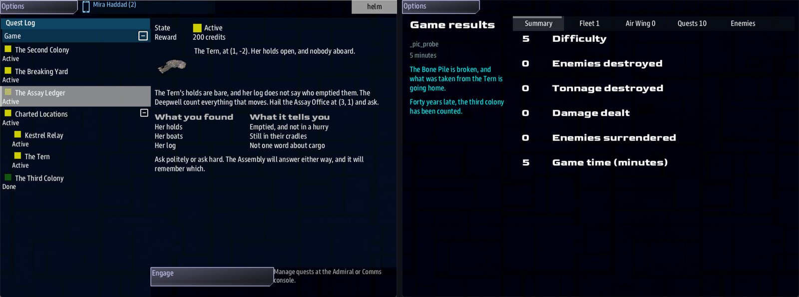

Class 5, Lecture 7 - Narrative and goals¶
What you will have at the end¶
A story with a first chapter, a middle and an end, running through the sandbox you have built. The crew finds the third colony's ship stripped bare. The trail leads to the Deepwell's ledger, and how the crew asks for it is remembered. The ledger leads to the Gleaners' Bone Pile. And when the Bone Pile is broken, the game ends, in your words.
Each chapter is hidden until the one before it is done. The crew is never handed the whole plot.

A chapter newly in the Quest Log, and the end-of-game screen with the goal's own sentence.You change two of your leads, write one new chapter of the story between them, add a Goals chapter with one record, and write one more call in the Dialogue chapter.
The video¶
About 6 minutes. Subtitles are available in the player.
Before you start¶
- Your
MyUniversemission as Lecture 6 left it.kestrel_verge.amdmatchesc5-06-jobs\example\. sbs lint MyUniversesaysclean.- The game closed, and the save deleted:
C:\Cosmos\data\missions\common_data\saves\universe_save_the_kestrel_verge_1.yaml.
Words for this lecture:
| Word | Meaning |
|---|---|
| Beat | One chapter of the story: a quest in the Narrative chapter |
| Chain | Beats in a row, each one revealing the next |
| Goal | A quest that ends the whole game when it is done |
| Signal | A word that one record sends and another waits for. You met it in Class 1 |
Step 1 - What you already have, and what is missing¶
Your Narrative chapter holds four leads. Every one says Starts when: at once, so the
crew sees all four from the first minute, in any order. That is a list of places. It is
not a story.
A story needs three things you know from Class 1, Lecture 9:
| Line | What it does |
|---|---|
Starts when: revealed |
The beat is hidden. It is not in the Quest Log, and nothing can finish it |
Then: reveal lead_bone_pile |
When this beat is done, wake the one with that key |
Reward: |
What finishing the beat pays |
One thing is simpler here than in Class 1. Your beats are not steps inside an arc, so
Then: reveal takes a plain key, with no slash.
Two of the four leads stay as they are. The Second Colony and The Breaking Yard are how the crew learns where its neighbors live. The other two become the first and last chapters of the story.
Step 2 - The chain¶
Find ### [The Third Colony](lead_tern) in the Narrative chapter. Replace it, and the
lead under it, with these three records.
### [The Third Colony](lead_tern)
---
Scope: shared
Starts when: at once
Done when: reach 1, -2
Then: reveal tern_ledger
---
The Tern never answered. Her last position was (1, -2). Go and see what is left of her.
She was the third colony ship, and the last one out. Nobody has been to look in forty years.
### [The Assay Ledger](tern_ledger)
---
Scope: shared
Starts when: revealed
Done when: signal ledger_read
Then: reveal lead_bone_pile
Reward: 200 credits
---
 The Tern, at (1, -2). Her holds open, and nobody aboard.
The Tern's holds are bare, and her log does not say who emptied them. The Deepwell count everything that moves. Hail the Assay Office at (3, 1) and ask.
| What you found | What it tells you |
|---|---|
| Her holds | Emptied, and not in a hurry |
| Her boats | Still in their cradles |
| Her log | Not one word about cargo |
Ask politely or ask hard. The Assembly will answer either way, and it will remember which.
### [What the Gleaners Keep](lead_bone_pile)
---
Scope: shared
Starts when: revealed
Done when: reach -4, -3
Then: reveal goal_bone_pile
Reward: 400 credits
---
 The Assay Office, reading you the entry
The ledger has the Tern's cargo sold on by the Gleaners. There is a place at (-4, -3) they will not talk about. Go armed.
| The ledger | The entry |
|---|---|
| Cargo | Forty crates off the Tern |
| Entered as | Salvage |
| Sold by | The Gleaners |
## What the ledger leaves out
Where the Tern's people went. The Gleaners stack what they cannot sell at the Bone Pile, and nobody buys people.
What changed:
| Record | The change |
|---|---|
| The Third Colony | One new line, Then: reveal tern_ledger |
| The Assay Ledger | New. Hidden until the crew has been to the Tern. It ends on a signal, which Step 3 sends |
| What the Gleaners Keep | at once became revealed. It has a reward, and it reveals something called goal_bone_pile, which Step 4 writes. Its text is new: Step 2's last part is about it |
Read down the Then: lines and you have the table of contents: the Tern, then the
ledger, then the Bone Pile, then the end.
The text under a beat is the briefing. It is what the crew reads in the Quest Log when the beat appears, and it is a page, laid out like a quest's description in Class 1, Lecture 8. Each one says what was just learned, and where to go next. Write the place into the words. A beat that ends on a signal has nowhere for Helm's Engage to fly to, so the crew gets there by reading.
These are the two chapters the crew reads at a turn in the story, so they get the most:
| In the briefing | What it is for |
|---|---|
 The Tern, at (1, -2). and the words after it |
A picture of the ship they have just left, beside the words. wreck is a model the game has. The words after the round bracket sit beside it, as in Lecture 6 |
The line that starts ![](face:// and ends The Assay Office, reading you the entry |
Who is speaking: a face, with the words beside it, as in Class 2, Lecture 2. A face is the long string of codes after face://. Copy it whole from this page, from the first zim to the last ; |
| A table | What is known, in rows, as in Class 1, Lecture 11: a heading row, the row of dashes, then a row for each thing |
## What the ledger leaves out |
A heading inside the briefing. No square brackets, so it is not a record of its own |
A face here cannot be a word such as terran or female, the kind of word a Face:
line takes in Lecture 9. Such a word tells the game to pick a face. A picture needs the face itself, written
out. This one is a Ximni face, and the Deepwell fly Ximni ships.
Keep the first paragraph the order. A crew in a hurry reads that and flies; the table and the heading are for the crew that stops to think.
Step 3 - A beat that ends in a conversation¶
The middle chapter says Done when: signal ledger_read. Nothing in the game sends a
signal called ledger_read until you write the thing that does. Here it is an answer in
a call.
The Deepwell have no hail yet. Go to the end of the file and add these four records to the Dialogue chapter.
### [Deepwell Hail](deepwell_hail)
---
Speaker: deepwell
When: comms
---
%{standing >= 20} Assay Office. Your account is in order, captain.
%{standing < 20} Assay Office. Have your manifest ready.
- [Pay the search fee and ask about the Tern](deepwell_ledger) ; costs 150 credits, signal ledger_read, earns deepwell by-the-book 20, earns deepwell peaceful 20
- [Demand the Tern's entry, now](deepwell_ledger_cold) ; signal ledger_read, earns deepwell resourceful 20, earns deepwell violent 20
- [Sign off](deepwell_bye)
### [The Ledger](deepwell_ledger)
---
Speaker: deepwell
---
% Fee received. Forty crates off the Tern, entered as salvage, sold to us by the Gleaners. We do not ask where salvage comes from.
### [The Ledger, Thrown](deepwell_ledger_cold)
---
Speaker: deepwell
---
% Take it, then. Forty crates off the Tern, sold to us by the Gleaners. And captain: we have entered this conversation too.
### [Deepwell Out](deepwell_bye)
---
Speaker: deepwell
---
% Assay Office out.
One item is new: signal ledger_read. It sits among an answer's outcomes, after the
;, with commas round it like the others. When the crew gives that answer, the signal
is sent, and the beat that was waiting for it is done.
This is how a beat shifts standing. Both answers send the same signal, so both close the chapter. They differ in what the Deepwell think afterward.
| The answer | Credits | Standing with the Deepwell |
|---|---|---|
| Pay the search fee | 150 fewer | Up 20. They value by-the-book and peaceful, and the crew was both |
| Demand the entry | None | Down 20. resourceful and violent are the far ends of the same two traits |
The story moves on either way. The Deepwell remember which way. Put the deed in the answer, beside the signal.
A beat can carry a deed too. A quest can have a line
Standing:, and a reward can hold anearns, as Salvage's does. On a beat in the Narrative or Goals chapter both work, and both reach every ship flying, whoever finished the beat. Played with two ships:Standing: gleaners fearsome 70on a beat left each of them at 40 with the Gleaners, andReward: 200 credits, earns deepwell by-the-book 30paid the 200 and left each of them at 20 with the Deepwell.So there are two tools. A deed on the beat is the story's verdict: the same for everybody, whichever way it was done. A deed in an answer is a choice: it goes to the ship that gave the answer, and to no other. This step wants the crew to choose how they ask, so its deeds are in the conversation.
Put costs first. If the crew cannot pay, the answer is refused, and everything
written after costs is skipped. A signal written in front of it would already have
been sent.
Step 4 - How it ends¶
A goal is a beat with one more line. Find ## [Dialogue](dialogue). In front of that
heading, add a new chapter.
## [Goals](goals)
### [Break the Bone Pile](goal_bone_pile)
---
Scope: shared
Starts when: revealed
Done when: destroy 4 enemies
Win: The Bone Pile is broken, and what was taken from the Tern is going home.
Citation: Forty years late, the third colony has been counted.
---
The Tern's people are stacked here with her cargo. Four Gleaner hulls stand between you and them.
-  Break the hulls that guard the pile
-  Then the Tern's people can go home
Forty years is long enough. Nobody else is coming for them.
| Line | What it means |
|---|---|
## [Goals](goals) |
The chapter. The key must be goals |
Starts when: revealed |
This goal is the story's last chapter, so the beat before it reveals it. A goal can also say at once |
Done when: destroy 4 enemies |
The same endings as a job, from Lecture 6 |
Win: |
Finishing this quest ends the game, won. The sentence is the one on the end-of-game screen. You know this line from Class 1 |
Citation: |
The closing words. The end-of-game screen prints them under your Win: sentence |
| The text below the fence | The last briefing. The two lines starting - , and on the hidden beat, "waits to be revealed, and nothing reveals it" (never-revealed) |
The Then: line left off |
The same, with nothing in the log | The second of those warnings (never-revealed) |
A word that is not reveal: Then: show tern_ledger |
The same | A warning: "show is not a Then: verb" (unknown-then-verb), and both of the others |
The beat's name where its key should be: Then: reveal The Assay Ledger |
The same | "lead_tern Then reveals The, and no record has that key" (dangling-reveal) |
| Two beats with the same key | The second is lost, and the story stops where it should have appeared | A warning: "is the key of 2 records in the same place" (duplicate-key). If a Then: line names that key, a second one on it: "could mean ... say which by writing the path" (ambiguous-reference) |
| A beat with two hashes | That beat, and every beat under it in the chapter, is lost | A warning on each of their lines: "this record is being read as a map" (unknown-field). And one on each of the two answers that send ledger_read, now that no beat waits for it: "emits signal ledger_read but no //signal/ledger_read route was found" (signal-no-route) |
## [Narrative](story) |
No story and no leads. The Quest Log holds Charted Locations and nothing else | The same warning, on every line of every beat, and the same two on the answers (signal-no-route) |
The signal misspelled in the beat: Done when: signal ledger_red |
The chapter appears and can never be finished | Three warnings. On the beat: "waits for the signal ledger_red, and nothing in the mission sends it" (unfired-signal). And one on each of the two answers, which still send ledger_read and now have nothing waiting for it (signal-no-route) |
| The signal misspelled in an answer | That answer no longer closes the chapter | A warning on the answer: "emits signal ledger_red but no //signal/ledger_red route was found" (signal-no-route) |
The word signal left off: Done when: ledger_read |
The chapter can never be finished | A warning: "is not something the game can watch for" (unknown-trigger), and the two signal-no-route warnings on the answers |
No comma between costs 150 credits and signal ledger_read |
The fee is taken. The chapter stays open | A warning: "signal ledger_read is read as part of costs 150 credits, so it never happens" (outcome-run-together) |
| The line that reveals the goal left off | The goal never appears, and the game never ends | The never-revealed warning, on the goal |
## [Goals](endings) |
The same, and mast.runtime.log has a line about goal_bone_pile |
A warning on each line of the goal: "this record is being read as a map" (unknown-field) |
Two things look wrong and are not. Lint says clean for both.
| You wrote | What the game does |
|---|---|
Then: tern_ledger, with the word reveal left out |
Works: the next chapter appears. Write the word all the same. It says what the line does |
Two keys on one line: Then: reveal tern_ledger, lead_bone_pile |
Both are revealed at once. A Then: line takes several things, with a comma between them. In this story that is a mistake of plot and not of spelling: the third chapter is in the Quest Log before the second is done |
Mistakes lint cannot see
Lint says clean for every one of these.
| The mistake | What the game does |
|---|---|
Starts when: at once on a middle chapter |
It is in the Quest Log from the first minute. A crew that does it early wakes the chapter after it, and the story runs out of order |
A cost the crew cannot pay: costs 900 credits |
The answer is refused. The chapter stays open until they can pay, or give the other answer |
Win: true |
The game ends, won. The end-of-game screen shows the goal's name where your sentence would be |
No Win: line on the goal |
The goal is done, and the game goes on |
Lose: where you meant Win: |
When the goal is done nothing happens, and the game goes on |
No Citation: line |
The end-of-game screen shows your Win: sentence alone |
A side's key that ends in s in a goal: destroy 4 gleaners |
The goal never finishes. Lecture 6 has this row too. Write enemies |
So check these by eye:
- Read down the
Then:lines. Each names the key of the next chapter, and the last one names the goal. - Only the first chapter says
at once. - The word after
signalis spelled the same in the beat and in every answer that sends it. - In an answer,
costscomes beforesignal. - The goal has a
Win:line with a sentence after it. - A face after
face://is copied whole, from the first three letters to the last;before the round bracket. Lint warns about a face it cannot read, but a face cut short at a semicolon still reads, as part of a face.
Step 6 - Play it¶
- In the
helmwindow, open the Quest Log. There are three entries: The Second Colony, The Breaking Yard and The Third Colony. The other chapters are not there. - Engage The Third Colony. On arrival it is done, and The Assay Ledger is in the Quest Log, with your briefing.
- Select The Assay Ledger and press Engage. The ship stays where it is. This chapter ends in a conversation, and the briefing says where.
- Engage The Second Colony. The Assay Office is far out, as in Lecture 5: fly to it and scan it on Science. Then on Comms select Assay Office and press Hail Deepwell Assembly. There are three answers.
- Press Pay the search fee and ask about the Tern. The fee takes the crew from 500 credits to 350, and the chapter pays 200: they have 550. The ship's standing with the Deepwell is 20. In the Quest Log, The Assay Ledger is done and What the Gleaners Keep has appeared.
- Engage it. On arrival at -4, -3 it is done, and pays 400: the crew has 950. Break the Bone Pile has appeared. Ships are waiting at the Bone Pile, far out from where you arrive.
- Destroy four of them. The game ends, and the end-of-game screen shows your
Win:sentence with yourCitation:under it.
Start a new game and at step 5 press Demand the Tern's entry, now. The chapter closes the same way, the crew keeps its 150 credits, and the ship's standing with the Deepwell is 20 below where it was.
What you need to know about a story
| Fact | What it means for your story |
|---|---|
| A hidden chapter cannot be finished | A crew that hails the Assay Office before finding the Tern can pay the fee and be told about forty crates, and the chapter is still hidden. They will have to ask again. Write the answer's words so that asking early makes sense, or accept it |
| An answer can be given again | The fee can be paid a second time, and the deed happens a second time. The chapter pays its 200 once. This is Lecture 4's rule: a deed in talk needs a cost |
| The story belongs to the whole game | With two ships, the chapter is done for both when either one does it, and its reward is paid to each side that has a ship, once |
| A beat can pay in standing as well as credits | Standing: on the beat, or earns in its Reward:, goes to every ship flying. A deed in an answer, as in Step 3, goes to the ship that answered |
Win: works on any quest in the Narrative or Goals chapter |
A goal is a habit, not a rule. Keeping endings in a chapter of their own makes them easy to find |
| A goal can be lost | Give it Fails when: 20 minutes and Lose: with a sentence. If the time runs out, the game ends, lost, with that sentence |
| A new game has a new seed, and the same story | Your beats name places by their two numbers. Those places are landmarks and homes you wrote, so they are where the briefings say they are in every game |
If something goes wrong¶
| What you see | Likely cause |
|---|---|
| No leads and no story in the Quest Log at the start | The Narrative chapter's key is not narrative |
| Every chapter is in the Quest Log at the start | They all say Starts when: at once |
| A chapter is done and the next one does not appear | The key after Then: reveal is not the next beat's key. Read mast.runtime.log |
| The crew paid the fee and The Assay Ledger is still open | The signal's word differs between the beat and the answer. Or there is no comma between costs and signal |
| The crew paid the fee and nothing appeared | They asked before finding the Tern. The chapter was still hidden |
| Pressing the fee answer leaves the same three buttons | The crew has fewer than 150 credits. The answer was refused |
| A beat should have changed a side's standing, and did not | The deed names a trait that side does not value, or its key is misspelled. Lecture 4, Step 5 |
| The goal was done and the game did not end | It has no Win: line, or it says Lose: |
| The end-of-game screen has no second sentence | The goal has no Citation: |
Exercise¶
- Write your story's chapters as one line each, on paper, before you open the file. Three is enough. What does the crew learn at the end of each?
- Turn them into a chain. The first says
at once. The rest sayrevealed. - End one chapter with a conversation. Give the crew two ways to get what they came for, and make a side think differently of them for each.
- Write the briefing under each beat so that a crew who reads only its first paragraph knows where to go. Then give the beat at the turn of your story more: who is speaking, or what is known, in a table.
- Decide whether your universe ends. If it does, write the goal, its
Win:sentence and itsCitation:. If it does not, say why not, out loud.
Checkpoint¶
You are done when all five are true:
sbs lint MyUniversesaysclean.- At the start of a game the Quest Log shows the first chapter and not the others.
- Each chapter appears when the one before it is done.
- One chapter is closed by an answer in a call, and the answer the crew chose changed a side's standing.
- Finishing the goal ends the game with your sentence.
Next¶
Lecture 8 puts people in the world: captains with names, who each keep their own opinion of the crew, and who can become rivals.
Further reading¶
- "Story and goals" in the Open Universe writer's walkthrough. It writes
State: activeandState: secret, which are older spellings ofStarts when: at onceandStarts when: revealed. Both still work. silver_reach.amdin the Open Universe mission: a three-beat chain called The Dimming, and one goal.- Class 1, Lecture 9, "Chains and trees":
Then: reveal,Fails when:andWin:in full.
Download this lecture's finished files (a zip of its example folder).